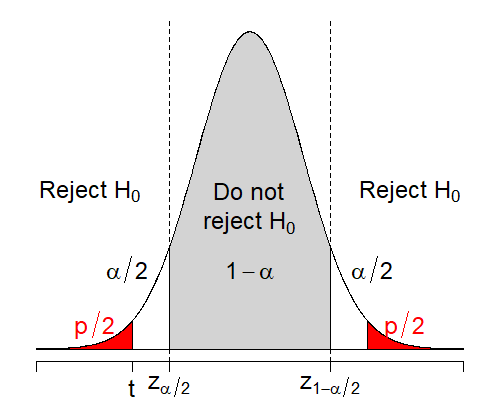
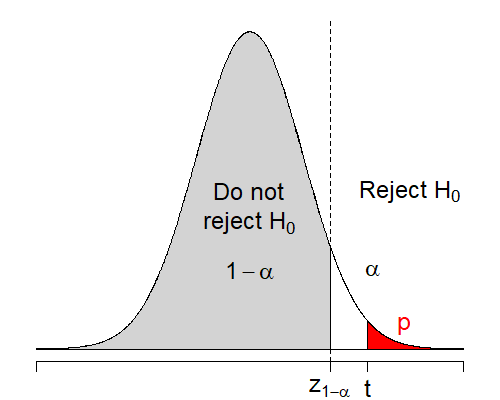
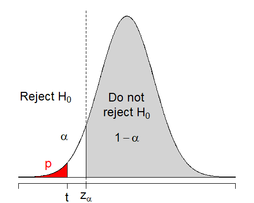

8 Hypothesis Tests
8.1 Hypotheses
8.1.1 Research Questions
Recall in Chapter 1, we discussed that a data analysis starts with a research questions.
Hypothesis tests help us answer questions regarding the values or the range of values of population parameters.
Example 8.1 Examples of questions that can be answered using hypothesis tests
Is the mean highway fuel consumption of a new car model different from what the manufacturer claims?
Has the average age of online consumers increased over the last few years?
On average does a bottle filling machine under-fill bottles?
We can see that the all the above questions are related to the values of population mean \(\mu\), but for different random variables.
8.1.2 Hypotheses
Once we have a research question in mind, we need to form hypotheses. In hypothesis testing, we have two types of hypotheses:
the null hypotheses: the statement/claim to be tested/challenged
Typically, a null hypothesis is a statement of “no effect” or “no difference”
We usually want to find evidence against the null hypothesis.
Notation: \(H_0\)
the alternative hypotheses: the statement/claim against the null hypothesis
Evidence supporting the alternative hypothesis is evidence against the null hypothesis.
Notation: \(H_1\) or \(H_A\). In this chapter, I will use \(H_0\) for null hypothesis and \(H_1\) for alternative hypothesis.
Example 8.2 Continue with Example 8.1
Is the mean highway fuel consumption of a new car model different from what the manufacturer claims?
\(H_0\): mean highway fuel consumption of the new car model is the same as what the manufacturer claims.
\(H_1\): mean highway fuel consumption of the new car model is different from what the manufacturer claims.
Has the average age of online consumers increased over the last few years?
\(H_0\): The average age of online consumers this year is the same with the average age of online consumers a few years ago.
\(H_1\): The average age of online consumers this year is more than with the average age of online consumers a few years ago.
On average does a bottle filling machine under-fill bottles?
\(H_0\): On average, the bottle filling machine fill the bottles at the exact required amount.
\(H_1\): On average, the bottle filling machine fill the bottles less than the required amount.
8.1.3 Example: Hypothesis About A Specific Value of \(\mu\)
Suppose we are interested in the unknown population mean \(\mu\) and we want to challenge the claim that \(\mu\) is in fact \(\mu_0\) (\(\mu_0\) is called the hypothesized value of \(\mu\)). Then our null hypothesis is
\[H_0: \mu = \mu_0\]
The alternative hypothesis can be one of the three possibilities
\(H_1: \mu \ne \mu_0\).
- The combination of \(H_0\) and this \(H_1\) is called a two-sided test, meaning \(H_1\) is on both sides of \(\mu_0\).
\(H_1: \mu > \mu_0\).
- This is called a one-sided upper-tail test, meaning \(H_1\) is on the upper side of \(\mu_0\).
\(H_1: \mu < \mu_0\).
- This is called a one-sided lower-tail test, meaning \(H_1\) is on the lower side of \(\mu_0\).
Example 8.3 In Example 8.2:
Suppose the mean highway fuel consumption claimed of the new car model is \(30\) miles per gallon (mpg). Let \(\mu\): the actual mean highway fuel consumption of the new model. Then our hypotheses are
\[H_0: \mu = 30 \hspace{5mm} \text{versus} \hspace{5mm} H_1: \mu \ne 30\]
Suppose the average age of online consumers a few years ago was \(23.3\). Let \(\mu\) be the mean age of online consumers nowadays. Then we have
\[H_0: \mu = 23.3 \hspace{5mm} \text{versus} \hspace{5mm} H_1: \mu > 23.3\]
Suppose the required amount of cola that the machine should fill is \(355\) ml. Let \(\mu\) be the actual mean amount of colar fill be the filling machine. Then our hypotheses are
\[H_0: \mu = 355 \hspace{5mm} \text{versus} \hspace{5mm} H_1: \mu < 355\]
Exercise 8.1 Which one of the above is a two-sided test? a one-sided test?
8.2 Hypothesis Test
A hypothesis test is a decision rule to answer the research questions. In statistics, we usually establish decision rules based on an event \(R\) which is in favor of \(H_1\) and against \(H_0\).
If event \(R\) actually happens in our obtained data, we reject \(H_0\).
- The fact that event \(R\) happens is an evidence supporting \(H_1\) and against \(H_0\).
If event \(R\) does not happen, then we say we do not reject \(H_0\).
- We do not say: “we accept \(H_0\)” because we never know what is the truth in the population, if we only based our decision on the sample data. But because we do not have good evidence against \(H_0\), we say that we do not reject \(H_0\).
Example 8.4 In Example 8.3
The fuel consumption case:
Suppose we sample \(n\) cars from that new car model and calculate the sample mean highway fuel consumptions from those cars \(\bar{X}_n\) (\(\bar{X}_n\) is random).
An evidence supporting \(H_1: \mu \ne 30\) will be that the sample mean we obtain from data will be either a lot greater than \(30\) or a lot smaller than \(30\).
Then the event \(R\) can be, for example, \(|\bar{X}_n| > 40\).
We reject \(H_0\) if the actual data we collect \(\bar{x}_n\) has the absolute value that is greater than 40 and we do not reject \(H_0\) otherwise.
The online consumers case:
Suppose we survey \(n\) online consumers about their age and calculate their mean age \(\bar{X}_n\).
An evidence supporting \(H_1: \mu > 23.3\) will be that the sample mean is a lot greater than 23.3.
For example, we can let \(R\) be the event that \(\bar{X}_n > 30\).
If the mean age of people in the survey we conduct \(\bar{x}_n\) is greater than 30, we reject \(H_0\). We do not reject \(H_0\) otherwise.
Exercise 8.2 Give a possible event \(R\) for the bottle filling case in Example 8.3.
Notes:
\(H_0, H_1\), \(R\) define a hypothesis test.
\(R\) is called the critical event of the test, i.e., when this event is observed, we reject the null hypothesis \(H_0\).
8.3 Error of a Test
We cannot just define whatever critical event \(R\) we want, that would not be called a statistical test! We have to take into account the fact that \(\bar{X}_n\) can vary according to the sample. Because of that, any test rule can never be correct all the time. To conduct the test and make conclusions with confidence, we need to control the error of the test.
A hypothesis test can make two types of possible error:
Type I error: When we reject \(H_0\) while in fact \(H_0\) is true
Type II error: When we do not reject \(H_0\) while in fact \(H_1\) is true
| \(H_0\) is true | \(H_1\) is true | |
|---|---|---|
| Reject \(H_0\) | Type I error | Correct |
| Do not reject \(H_0\) | Correct | Type II error |
The probability that
Type I error happens is called the significance level or the size of the test. Notation: \(\alpha\)
\[\alpha = \mathbb{P}(\text{Reject }H_0|H_0\text{ is true})\]
Type II error happens is denoted as
\[\beta = \mathbb{P}(\text{Do not reject }H_0|H_1\text{ is true})\]
Then \(1-\beta\) is called the power of the test.
\[1-\beta = \mathbb{P}(\text{Reject }H_0\text{ correctly}|H_1\text{ is true})\]
In Hypothesis Testing, it is most common19 that we want to control for Type I error, i.e., we want Type I error of the test to be controlled at a specified significance level \(\alpha\).
Most popularly, we specify \(\alpha = 5\% = 0.05\).
Recall in Chapter 7, the confidence level is defined as \(1-\alpha\).
By specifying the significance level \(\alpha\), we can derive the test we want, i.e., we can find an appropriate critical event \(R\) such that Type I error is controlled at \(\alpha\). Similar to confidence level, we will also use pivotal quantities to construct the tests.
8.4 One-sample Hypothesis Tests of the Mean
8.4.1 Testing \(H_0: \mu = \mu_0\) When \(\sigma\) is Known
Recall from Section 7.1, if
either \(X_1, X_2, ..., X_n \overset{\text{iid}}{\sim} \mathcal{N}(\mu, \sigma^2)\),
or \(X_1, X_2, ..., X_n \overset{\text{iid}}{\sim} (\mu, \sigma^2)\) for \(n > 30\)
and \(\sigma\) is known, then we have the pivotal quantity
\[\frac{\bar{X}_n - \mu}{\sigma/\sqrt{n}} \sim \mathcal{N}(0,1)\]
Because the distribution of the pivotal quantity above is known, we can construct the critical event based on this, calculate and hence control for type I error.
Let us re-state our problem: Suppose that I have the data \(X_1, ..., X_n\) coming from
either a normal distribution of mean \(\mu\) and variance \(\sigma^2\),
or an arbitrary distribution of mean \(\mu\) and variance \(\sigma^2\) but \(n\) is large
Further suppose that I know the population variance \(\sigma^2\), I want to conduct a hypothesis test on the population mean \(\mu\).
8.4.1.1 Two-sided Test
To begin with, a two-sided test for \(\mu\) is of the form \[H_0: \mu = \mu_0 \hspace{5mm} \text{versus} \hspace{5mm} H_1: \mu \ne \mu_0\] where \(\mu_0\) is some value that \(\mu\) is believed to be, but we want to challenge this belief. To construct a statistical hypothesis test in this case, we need to define a critical event \(R\) so that
if \(R\) actually happens, that is an evidence against \(H_0\) and supporting \(H_1\).
Type I error of the test is controlled at a significance level \(\alpha\), i.e., \(\mathbb{P}(R|H_0) = \alpha\).
First, because the test is two-sided, a supporting evidence for \(H_1\) is that \(\bar{X}_n\) is either much bigger or much smaller compared to \(\mu_0\). This is equivalent to the event that \(\frac{\bar{X}_n - \mu_0}{\sigma/\sqrt{n}}\) is very far from 0. Therefore, a critical event will be of the form \[\Big|\frac{\bar{X}_n - \mu_0}{\sigma/\sqrt{n}} \Big| > c,\] where \(c\) is called the critical value.
Second, I want to control Type I error of the test at a significance level \(\alpha\), that is \[\begin{align*} \alpha & = \mathbb{P}(R|H_0) \\ & = \mathbb{P}\left(|\frac{\bar{X}_n - \mu_0}{\sigma/\sqrt{n}}| > c | \mu = \mu_0\right) \\ & = \mathbb{P}\left(\Big|\frac{\bar{X}_n - \mu}{\sigma/\sqrt{n}}\Big| > c\right) \\ & = \mathbb{P}(|Z| > c) \\ & = 2\times \mathbb{P}(Z < -c) \\ \frac{\alpha}{2} & = \mathbb{P}(Z < -c) \end{align*}\]
This means that \(-c\) is the \(\frac{\alpha}{2}\)-quantile of the standard normal distribution \(Z\), i.e., \(-c = z_{\alpha/2}\). This is equivalent to \(c = z_{1-\alpha/2}\) (From Chapter 5).
Notes:
\(T = \frac{\bar{X}_n - \mu_0}{\sigma/\sqrt{n}}\) is called the test statistic, i.e., a statistic that has a known distribution under the null hypothesis.
- Here, you can see that if \(H_0: \mu = \mu_0\) is in fact true, then the distribution of \(T\) is known
\[T = \frac{\bar{X}_n - \mu_0}{\sigma/\sqrt{n}} \hspace{3mm} \overset{H_0: \mu = \mu_0}{\sim} \hspace{3mm} \mathcal{N}(0,1)\]
The observed test statistic is \[t = \frac{\bar{x}_n - \mu_0}{\sigma/\sqrt{n}}\]
We reject \(H_0\) if event \(R\) happens, i.e., the observed test statistic actually exceed the critical value: \(|t| > c = z_{1-\alpha/2}\).
Example 8.5 The Classic Bottling Company has just installed a new bottling procedure that will fill \(355\) ml cans of its Classic Cola soft drink. Under-filling leads to customer complaints, and over-filling costs the company considerable money. The bottling company wants to set up a hypothesis to test if on average the machine fills an amount different from \(355\)ml.
To test this hypothesis the company drew a random sample of \(36\) filled cans and found that the sample average was \(354.96\). Suppose that the standard deviation for the population is \(\sigma = 0.1\). Conduct a statistic test at \(5\%\) level of significance.
Solution:
Step 1: Hypotheses: \(H_0: \mu = 355\) vs. \(H_1: \mu \ne 355\).
Step 2: Calculate the test statistic
\[t = \frac{\bar{x} - \mu_0}{\sigma/\sqrt{n}} = \frac{354.96-355}{0.1/\sqrt{36}} = -2.4\]
Step 3: Because we have a two-sided test at \(\alpha = 5\% = 0.05\) level of significance, our critical value is \(c = z_{1-\alpha/2} = z_{0.975} = 1.96\).
Step 4: Since \(|t| = 2.4 > z_{1-\alpha/2} = z_{0.975} = 1.96\), we reject the null hypothesis \(H_0\) at 5% level of significance. We conclude that there is sufficient evidence in our data to support the claim that the machine fills an amount different from the claimed amount of \(355\)ml.
8.4.1.2 \(p\)-value
Another popular way to conduct the test is to calculate the probability
\[p = \mathbb{P}(|T| > |t| \Big| H_0)\]
We call this the \(p\)-value, i.e., the probability of getting a test statistic that is at least as extreme as the one observed, assuming the null hypothesis is true.
We know that \(\mathbb{P}(|T| > z_{1-\alpha/2} \Big| \mu = \mu_0) = \alpha\) and we will reject \(H_0\) if \(|t| > z_{1-\alpha/2}\)
However, for any \(0 < a < b\) and any random variable \(X\), then \(\mathbb{P}(|X| > a) > \mathbb{P}(|X| > b)\).
So the test is equivalent to rejecting \(H_0\) if \(p < \alpha\) and do not reject \(H_0\) otherwise.
In the two-sided test,
\[p = \mathbb{P}(|T| > |t|\Big|\mu = \mu_0) = \mathbb{P}(|Z| > |t|)\]
- For majority of the tests (not only the test about the population mean \(\mu\)) run by statistical software, the \(p\)-value will be printed and we will always reject the null hypothesis at \(\alpha\) level of significance if \(p < \alpha\).
The following figure illustrate the two-sided test.
Figure 8.1: Regions of rejecting \(H_0: \mu = \mu_0\) when \(H_1: \mu \ne \mu_0\).
Example 8.6 Conduct the test in Example 8.5 using the \(p\)-value method.
Solution:
Step 1: Hypotheses: \(H_0: \mu = 355\) vs. \(H_1: \mu \ne 355\).
Step 2: Calculate the test statistic
\[t = \frac{\bar{x} - \mu_0}{\sigma/\sqrt{n}} = \frac{354.96-355}{0.1/\sqrt{36}} = -2.4\]
Step 3: The \(p\)-value is \[p = \mathbb{P}(|Z| > |t|) = \mathbb{P}(|Z| > 2.4) = 2\times \mathbb{P}(Z < -2.4) = 0.0164\]
Step 4: Since \(p = 0.0164 < \alpha = 0.05\), we reject the null hypothesis \(H_0\) at 5% level of significance. We conclude that there is sufficient evidence in our data to support the claim that the machine fills an amount different from the claimed amount of \(355\)ml.
8.4.1.3 Lower-tail One-sided Test
Suppose we are interested in testing
\[H_0: \mu = \mu_0 \hspace{5mm} \text{versus} \hspace{5mm} H_1:\mu<\mu_0\]
The critical event that supports \(H_1\) would be that the sample mean \(\bar{X}_n\) is much less than \(\mu_0\), i.e., \(\frac{\bar{X}_n-\mu_0}{\sigma/\sqrt{n}}\) is much less than 0. So, the critical event should be of the form \[T = \frac{\bar{X}_n-\mu_0}{\sigma/\sqrt{n}} < c\]
To control the Type I error at \(\alpha\), we have \[\begin{align*} \alpha & = \mathbb{P}\left(\frac{\bar{X}_n-\mu_0}{\sigma/\sqrt{n}} < c\Big|\mu = \mu_0\right) \\ & = \mathbb{P}\left(\frac{\bar{X}_n-\mu}{\sigma/\sqrt{n}} < c\right) \\ & = \mathbb{P}(Z < c) \end{align*}\] so \(c = z_{\alpha}\). Similar to the two-sided test, we will use either the critical value or the \(p\)-value to conduct the test. In particular, we will reject \(H_0\) if either
the observed test statistic is smaller than the critical value \[t = \frac{\bar{x}_n-\mu_0}{\sigma/\sqrt{n}} < z_{\alpha}\]
the \(p\)-value is less than \(\alpha\): \[p = \mathbb{P}(T < t \Big| \mu = \mu_0) = \mathbb{P}(Z < t) < \alpha\]
The following figure illustrate the lower-tail one-sided test.
Figure 8.2: Regions of rejecting \(H_0: \mu = \mu_0\) when \(H_1: \mu < \mu_0\).
Example 8.7 Suppose in Example 8.5, we want to test a lower-tail one-sided test instead of a two-sided test. What will be our test result?
Solution:
Step 1: We want to know if the bottling machine is under filling the bottles, so my hypotheses are \(H_0: \mu = 355\) vs. \(H_1: \mu < 355\).
Step 2: The test statistic \(t\) is still the same: \(t = -2.4\).
Step 3: Our critical value is \(c = z_{\alpha} = z_{0.05} = -1.645\).
Step 4: Because \(-2.4 = t < c = z_{0.05} = -1.645\), we reject the null hypothesis \(H_0\) at \(5\)% level of significance and conclude that there is sufficient evidence that the machine fills an amount that is less than the claimed amount of \(355\)ml.
8.4.1.4 Upper-tail One-sided Test
The upper-tail one-sided test is of the form \[H_0: \mu = \mu_0 \hspace{5mm} \text{versus} \hspace{5mm} H_1:\mu > \mu_0\] Similar to the lower-tail case, the test statistic is \[T = \frac{\bar{X}_n - \mu_0}{\sigma/\sqrt{n}}.\] But we need to reject \(H_0\) if \(t > z_{1-\alpha}\) or if \(p = \mathbb{P}(Z > t) < \alpha\). The following figure illustrate the upper-tail one-sided test.
Figure 8.3: Regions of rejecting \(H_0: \mu = \mu_0\) when \(H_1: \mu > \mu_0\).
Example 8.8
Step 1: Suppose we are testing \(H_0: \mu = 355\) vs. \(H_1: \mu > 355\) in Example 8.5.
Step 2: The test statistic \(t\) is the same.
Step 3: The \(p\)-value for this test is \[\mathbb{P}(Z > t) = \mathbb{P}(Z > -2.4) = 1 - \mathbb{P}(Z < -2.4) = 0.9918\]
Step 4: Because \(p = 0.9918 > \alpha = 0.05\), we do not reject the null hypothesis \(H_0\) at \(5\)% significance level and we conclude that there is not sufficient evidence to claim that the machine fills an amount that is greater than \(355\)ml.
8.4.1.5 One-sided or Two-sided Test?
We can see that for different choices of \(H_1\), the results of our test can be very different. It is very important to note that, we need to state the the hypotheses before we see the data, not after we see the data.
For example, suppose the sample mean of our collected data happen to be less than our hypothesized \(\mu_0\) value, and after that, we decide for a one-sided test \(H_0: \mu = \mu_0\) vs. \(H_1: \mu < \mu_0\).
In this case our Type I error is more than \(\alpha\) because there are some chance that even if in fact \(\mu > \mu_0\), we still obtain \(\bar{x}_n < \mu_0\), which leads us to choose to test the lower-tail one-sided test.
But we are not accounting for such an uncertainty when conducting \(H_0: \mu = \mu_0\) vs. \(H_1: \mu < \mu_0\). Now, our Type I error will be actually more than what we claim. And that is a scientific fraud!
8.4.1.6 Summary of Hypothesis Tests for the Mean When \(\sigma\) is Known
Test: For a significance level of \(\alpha\):
| \(H_0\) | \(H_1\) | Test statistic \(t\) | Critical value \(c\) | Reject \(H_0\) | \(p\)-value | Illustration |
|---|---|---|---|---|---|---|
| \(\mu \ne \mu_0\) | \(z_{1-\alpha/2}\) | \(|t| > c\) | \(\mathbb{P}(|Z| > |t|)\) |  | ||
| \(\mu = \mu_0\) | \(\mu > \mu_0\) | \(t = \frac{\bar{x}_n-\mu_0}{\sigma/\sqrt{n}}\) | \(z_{1-\alpha}\) | \(t > c\) | \(\mathbb{P}(Z > t)\) |  |
| \(\mu < \mu_0\) | \(z_{\alpha}\) | \(t < c\) | \(\mathbb{P}(Z < t)\)} |  |
Conclusion statements:
Reject \(H_0\) at \(\alpha\) level of significance. Conclude: There is sufficient evidence in our data that ….
Do not reject \(H_0\) at \(\alpha\) level of significance. Conclude: There is not sufficient evidence in our data that ….
Type I and type II error:
Figure 8.4: Type I and Type II error20
Notes: The above summaries about the conclusion statements and types of errors are applicable for most hypothesis tests, not only the tests for \(H_0: \mu = \mu_0\) when \(\sigma\) is known.
8.4.2 Testing \(H_0: \mu = \mu_0\) when \(\sigma\) is unknown
For \(X_1, X_2, ..., X_n \sim \mathcal{N}(\mu, \sigma^2)\) and \(\sigma\) is unknown, we use the following pivotal quantity
\[\frac{\bar{X_n} - \mu}{S/\sqrt{n}} \sim t(n-1)\]
When \(H_0: \mu = \mu_0\) is true, we have the test statistic
\[T = \frac{\bar{X_n} - \mu_0}{S/\sqrt{n}} \hspace{3mm} \overset{H_0: \mu = \mu_0}{\sim} \hspace{3mm} t(n-1)\]
whose distribution is known under \(H_0: \mu = \mu_0\).
Now, the test for \(H_0: \mu = \mu_0\) is very similar to the case where \(\sigma\) is known. We just need to replace \(\sigma\) by \(s\) and \(z\) by \(t(n-1)\) in the summary table in Section 8.4.1.6 above to obtain the test table for the case where \(\sigma\) is unknown.
Summary: Suppose \(Y\) is a random variable that follows \(t(n-1)\) distribution
| \(H_0\) | \(H_1\) | Test statistic \(t\) | Critical value \(c\) | Reject \(H_0\) | \(p\)-value |
|---|---|---|---|---|---|
| \(\mu \ne \mu_0\) | \(t_{1-\alpha/2, n-1}\) | \(|t| > c\) | \(\mathbb{P}(|Y| > |t|)\) | ||
| \(\mu = \mu_0\) | \(\mu > \mu_0\) | \(t = \frac{\bar{x}_n - \mu_0}{s/\sqrt{n}}\) | \(t_{1-\alpha,n-1}\) | \(t > c\) | \(\mathbb{P}(Y > t)\) |
| \(\mu < \mu_0\) | \(t_{\alpha,n-1}\) | \(t < c\) | \(\mathbb{P}(Y < t)\) |
Example 8.9 The average age of online consumers a few years before \(2007\) was \(23.3\) years. As older individuals gain confidence with the Internet, it is believed that the average age has increased.
A random sample of \(40\) individuals who made an online purchase during \(2007\) was drawn and it was found that their average age was \(24.2\) years and the standard deviation in the sample was \(5.3\) years.
Test the hypothesis at a \(1\)% level of significance.
Solution:
Step 1: Let \(\mu\) be the population mean age of online consumers in \(2007\). Hypotheses:
\[H_0: \mu = 23.3 \hspace{5mm} \text{vs.} \hspace{5mm} H_1: \mu > 23.3\]
Step 2: The test statistic is
\[t = \frac{\bar{x} - \mu_0}{s/\sqrt{n}} = \frac{24.2-23.3}{5.3/\sqrt{40}} = 1.074\]
Step 3: \(\alpha = 0.01\), and the test is a upper-tail one-sided test. We need to use the critical value \(c = t_{1-\alpha, n-1} = t_{0.99, 39} = 2.4233\) from the \(t\) table. (We use \(df = 40\) because it is closest to \(39\))
Step 3: Because \(t = 1.074 < c = t_{1-\alpha, n-1} = 2.423\) and this is a upper-tail test, we do not reject the null hypothesis and conclude that there is not sufficient evidence to suggest that the average age has increased.
Exercise 8.3 What will the result change if the test is two sided? one-sided lower-tail?
Notes:
NEVER decide the hypotheses after seeing the data. Hypotheses must be decided before you collect the data. If you do not know which direction from \(\mu_0\) that the true \(\mu\) lies, always choose the two-sided test.
When you conduct tests using computer software, they will always output the \(p\)-values. For all kinds of hypothesis tests, you reject the null hypothesis if \(p < \alpha\) where \(\alpha\) is the significance level you decide.
Caveats: The \(p\)-value will change whether you use a two-sided test or a on-sided one, so when use software, make sure you set the correct test you want.
Convention in scientific research: \(\alpha = 0.05\).
It is very useful to draw a some graphics like Figure 7.1-3 to have a sense of which kind of critical value or rejection criteria to use. When doing so, remember that you are trying to find evidence to support the alternative hypothesis. This will always help you navigate to the correct answer.
one-sided test: look at one of the two tails of the distribution.
two-sided test: look at both tails of the distribution.
We have learned the two most important concepts in inferential statistics: confidence intervals and hypothesis testing.
Both uses pivotal quantity to construct the intervals or the test.
CI give us the range of possible values of the population parameter, while hypothesis testing helps us evaluate some claims about the population parameter.
Usually, in a data analysis, although it is possible to choose freely, by convention, people choose confidence level = 1 - significance level.
8.4.3 Some More Examples
Example 8.10 A pet food manufacturer suspects that one of its machines is not filling the amount required for bags of dog food that are supposed to contain \(20\)kg of food. They want to test the null hypothesis that the mean fill is \(20\)kg against the alternative hypothesis that it is different from \(20\)kg. They sample \(100\) randomly selected bags and find a sample mean of \(20.1\) kg. Assume that the population standard deviation is known to be \(0.5\)kg. Test their hypothesis at a \(10\)% level of significance.
Solution: Information
\(\mu_0 = 20\)
\(\bar{x} = 20.1\)
\(n = 100\)
\(\sigma = 0.5\)
\(\alpha = 0.1\)
Step 1: The \(\mu\) be the mean weight of food that the machine fills for each bag of dog food. In this question, \(\sigma\) is known and we need to use a two-sided test. Hypotheses: \[H_0: \mu = 20 \hspace{5mm} \text{vs.} \hspace{5mm} H_1: \mu \ne 20\]
Step 2: The test statistic is \[t = \frac{\bar{x}-\mu_0}{\sigma/\sqrt{n}} = \frac{20.1-20}{0.5/\sqrt{100}} = 2\]
Step 3: \(\alpha = 0.1\) and the test is two-sided test for \(\sigma\) is known. So the critical value is \[c = z_{1-\alpha/2} = z_{0.95} = 1.645\]
Step 4: Because \(|t| = 2 > c = 1.645\) and the test is two-sided, we reject the null hypothesis at \(10\%\) level of significance. We conclude that there is sufficient evidence in the data that the machine is not filling the required amount of dog food.
Example 8.11 A study by the Center for Science in the Public Interest found that movie theatre popcorn is often very high in calories and saturated fat. The CSPI found that on top of the poor stated nutritional characteristics, in reality the popcorn had much higher calorie and fat content than what was claimed. Suppose you wish to investigate the calorie content of large bags of popcorn at your local theatre, where the theatre chain claims that a large untopped bag of their popcorn contains \(920\) calories on average. You purchase \(14\) bags of this type of popcorn, and suppose that it is reasonable to think that these \(14\) bags represent a random sample from the population of bags of this type. You have these bags of popcorn analyzed and find that the mean calorie content is \(1082\) and the standard deviation is \(60\).
Suppose we wish to carry out a test of the null hypothesis that the population mean calorie content is what the company claims it to be. If we feel a one-sided alternative hypothesis is most appropriate in this situation, what are the appropriate hypotheses?
Which procedure (\(z\) or \(t\)) is appropriate here? Why?
What is the value of the appropriate test statistic?
What is the critical value for the test statistic at 5% level of significance?
Give an appropriate conclusion of the results of the analysis.
Solution: Let \(\mu\) be the mean calories of movie theatre popcorn.
The hypothesis is \(H_0: \mu = 920\) versus \(H_0: \mu > 920\).
Because we collect the standard deviation from the sample, \(\sigma\) is unknown and we need to use the \(t\)-table.
The test statistic is
\[t = \frac{\bar{x} - \mu_0}{s/\sqrt{n}} = \frac{1082-920}{60/\sqrt{14}} = 10.1025\]
- \(\alpha = 0.05\) and we want to conduct a one-sided upper-tail test where \(\sigma\) is unknown, our critical value need to be
\[c = t_{1-\alpha, n-1} = t_{0.95, 13} = 1.7709\]
- Because \(t > c\) and the test is one-sided upper-tail test, we reject the null hypothesis at \(5\%\) level of significance. We conclude that there is sufficient evidence in the data that the average calories is greater than what is claimed.
There are other methods or philosophy about constructing a test, such as Bayesian tests, but we will not talk about it in this book.↩︎
Image adapted from https://microbenotes.com/type-i-and-type-ii-error/↩︎